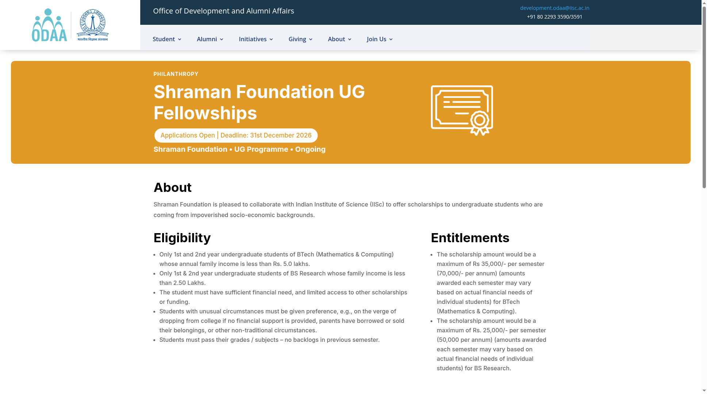
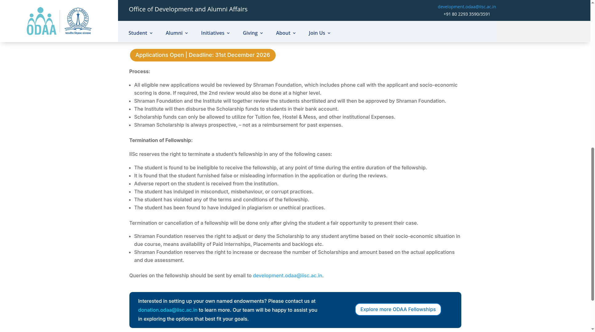
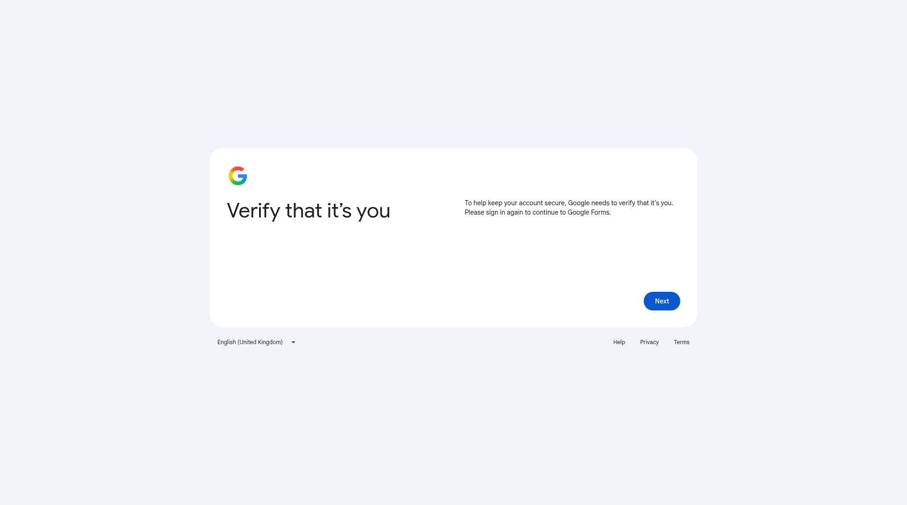
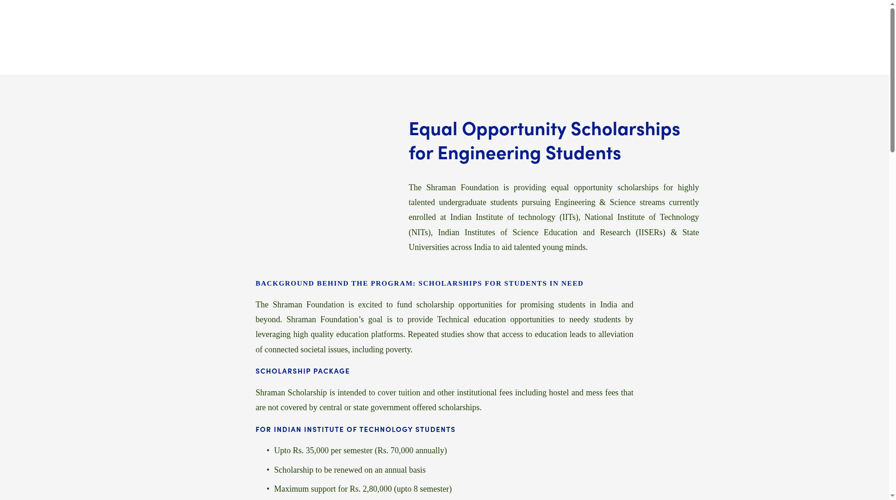

IISc students: Shraman fellowships offer up to ₹70,000 a year
Eligible first- and second-year IISc students in BTech (Mathematics & Computing) or BS Research can seek need-based help with upcoming institutional costs.
Read the official IISc notice ↗
Who is eligible, and how much?
- IISc BTech (Mathematics & Computing), year 1 or 2: annual family income below ₹5 lakh. Up to ₹35,000 per semester, or ₹70,000 per year.
- IISc BS Research, year 1 or 2: annual family income below ₹2.5 lakh. Up to ₹25,000 per semester, or ₹50,000 per year.
The amounts are ceilings, not guaranteed awards. Each semester's amount may vary with assessed financial need. Students must show sufficient need and limited access to other scholarships/funding, and have no backlogs from the previous semester. The notice gives preference to unusual hardship circumstances, such as a risk of dropping out without support.
Kerala students enrolled in the named IISc programmes are within this institute-based audience; studying at a Kerala college alone does not make this particular IISc call applicable. Do not use a broader Shraman eligibility rule instead of these programme-specific income limits.

IISc notice: application date, programme eligibility and funding ceilings. Actual full-HD desktop capture, 26 November 2026. Account identity hidden where present. Tap to enlarge.
What can the money pay for?
Tuition, hostel and mess, and other institutional expenses. The notice says support is prospective, not reimbursement of past expenses. Do not budget on getting old receipts refunded. IISc disburses approved funds to the student's bank account.
How selection works
- Shraman Foundation reviews eligible new applications, including a phone call and socio-economic scoring. A second review may be done if needed.
- The Foundation and IISc jointly review the shortlist.
- Shraman Foundation approves awards, and IISc disburses the funds.
The notice does not publish a fixed number of awards or a payment date. Funding, number of awards and eligibility can be reassessed. Paid internships, placements, backlogs and changes in financial circumstances may affect assistance.

Official selection, prospective-spending and continuation conditions. Actual full-HD desktop capture, 26 November 2026. Account identity hidden where present. Tap to enlarge.
1. Check the IISc notice before opening the form
Open the official notice and compare your programme, year, family income, financial need and previous-semester results with the criteria. First-year applicants who do not yet have a previous semester should ask IISc how the backlog condition is applied to them rather than inventing an exception.
2. Follow IISc's application button
Choose Applications Open | Deadline: 31st December 2026. The button links to a Google Form. Use the link from the IISc notice rather than an unrelated Shraman form, since different institutes/programmes can have different rules.
Open the exact form linked by IISc ↗
3. Complete your own Google sign-in if requested
During our check, Google asked the currently presented account to verify its sign-in before continuing to Forms. We stopped without signing in, requesting a code, entering student data or submitting anything. This does not establish that eligible students cannot access the form, or that an IISc account is mandatory.

Observed Google sign-in boundary, with account identity hidden. Actual full-HD desktop capture, 26 November 2026. Account identity hidden where present. Tap to enlarge.
4. Check the real form, then prepare its documents
The authenticated questions, document list, file formats/sizes, consent text and confirmation page were not inspected. Do not rely on a guessed upload checklist. After signing in with your own suitable account, read the actual form fully, prepare only the documents it requests, check every entry and submit within the official window. Save any receipt or confirmation it supplies.
If you cannot open the form, or its instructions disagree with the notice, contact IISc ODAA at development.odaa@iisc.ac.in or +91 80 2293 3590/3591, as listed by IISc. Ask about form access, documents and exact closing time before the last day. Do not send sensitive documents to a third-party listing.
Continuation and termination
The notice allows termination for later ineligibility, false/misleading information, an adverse institutional report, misconduct, corrupt or unethical practices, plagiarism or breach of terms. A student is given a fair opportunity to present their case before termination. Shraman may adjust or deny support as financial circumstances change, and may change award numbers/amounts after assessment. The IISc page does not promise automatic renewal for the whole degree.
Why the Foundation's general page is not this call's rulebook
Shraman's own site confirms its equal-opportunity scholarship programme and wider work with engineering/science institutions. That page lists broader institute categories and income rules. It does not replace IISc's lower BS Research income limit, named years or linked application route. We did not merge the separate general application portal's midnight deadline into the IISc date.

Sponsor-owned scholarship programme page, for background rather than IISc-specific eligibility. Actual full-HD desktop capture, 26 November 2026. Account identity hidden where present. Tap to enlarge.
English and Malayalam application videos
No reliable current IISc-call full English or Malayalam YouTube walkthrough was verified in the searches checked. These screenshots show the public notice, selection conditions, sponsor background and the sign-in boundary, not a completed form.
Official sources / ഔദ്യോഗിക ഉറവിടങ്ങൾ
IISc വിദ്യാർത്ഥികൾക്ക് Shraman ഫെലോഷിപ്പ്: വർഷം ₹70,000 വരെ
IIScയിലെ BTech (Mathematics & Computing), BS Research കോഴ്സുകളുടെ ഒന്നാം/രണ്ടാം വർഷ വിദ്യാർത്ഥികൾക്ക് സാമ്പത്തികാവശ്യത്തിന്റെ അടിസ്ഥാനത്തിൽ വരാനിരിക്കുന്ന സ്ഥാപനച്ചെലവുകൾക്ക് സഹായം.
ആർക്കാണ്, എത്ര സഹായം?
- IISc BTech (Mathematics & Computing), ഒന്നാം/രണ്ടാം വർഷം: കുടുംബ വാർഷിക വരുമാനം ₹5 ലക്ഷത്തിൽ താഴെ. സെമസ്റ്ററിന് ₹35,000 വരെ, വർഷം ₹70,000 വരെ.
- IISc BS Research, ഒന്നാം/രണ്ടാം വർഷം: കുടുംബ വാർഷിക വരുമാനം ₹2.5 ലക്ഷത്തിൽ താഴെ. സെമസ്റ്ററിന് ₹25,000 വരെ, വർഷം ₹50,000 വരെ.
ഇവ പരമാവധി തുകയാണ്; ഉറപ്പായ അവാർഡല്ല. യഥാർത്ഥ ആവശ്യത്തിനനുസരിച്ച് സെമസ്റ്ററിലെ തുക മാറാം. സാമ്പത്തിക ആവശ്യം ഉണ്ടായിരിക്കണം, മറ്റു സഹായസ്രോതസ്സുകൾ പരിമിതമായിരിക്കണം, കഴിഞ്ഞ സെമസ്റ്ററിൽ backlog ഉണ്ടാകരുത്. സഹായമില്ലെങ്കിൽ പഠനം ഉപേക്ഷിക്കേണ്ട സാഹചര്യം പോലുള്ള പ്രത്യേക ബുദ്ധിമുട്ടുകൾക്ക് മുൻഗണനയുണ്ട്.
പറഞ്ഞ IISc കോഴ്സുകളിൽ പഠിക്കുന്ന കേരള വിദ്യാർത്ഥികൾക്കും ഈ പരിധിയിൽ വരാം. കേരളത്തിലെ മറ്റൊരു കോളേജിൽ പഠിക്കുന്നത് മാത്രം ഈ IISc വിളിക്ക് യോഗ്യതയല്ല. പൊതുവായ Shraman നിയമം ഉപയോഗിച്ച് IIScയുടെ കോഴ്സ്/വരുമാന നിബന്ധന മാറ്റരുത്.
IISc പേജിലെ തീയതി, യോഗ്യത, പരമാവധി തുക. Actual full-HD desktop capture, 26 November 2026. Account identity hidden where present. Tap to enlarge.
എന്തിനാണ് പണം ഉപയോഗിക്കാവുന്നത്?
ട്യൂഷൻ, ഹോസ്റ്റൽ, മെസ്, മറ്റ് സ്ഥാപനച്ചെലവുകൾക്ക്. വരാനിരിക്കുന്ന ചെലവുകൾക്കാണ്; പഴയ ചെലവിന്റെ reimbursement അല്ല. അംഗീകരിച്ച സഹായം IISc വിദ്യാർത്ഥിയുടെ ബാങ്ക് അക്കൗണ്ടിലേക്ക് നൽകും.
തിരഞ്ഞെടുപ്പ് എങ്ങനെയാണ്?
- Shraman Foundation പുതിയ യോഗ്യ അപേക്ഷകൾ പരിശോധിക്കും. ഫോൺ സംഭാഷണവും socio-economic scoringഉം ഉണ്ടാകും. ആവശ്യമെങ്കിൽ രണ്ടാം പരിശോധനയും.
- Foundationഉം IIScയും shortlist ചേർന്ന് പരിശോധിക്കും.
- Foundation അംഗീകരിച്ചശേഷം IISc പണം നൽകും.
അവാർഡുകളുടെ സ്ഥിരമായ എണ്ണമോ പണം കിട്ടുന്ന തീയതിയോ അറിയിപ്പിലില്ല. സാമ്പത്തികസ്ഥിതി, paid internship, placement, backlog എന്നിവയുടെ അടിസ്ഥാനത്തിൽ സഹായം മാറാം. അവാർഡ് എണ്ണവും തുകയും ആവശ്യാനുസരണം മാറ്റാം.
തിരഞ്ഞെടുപ്പ്, ഉപയോഗം, സഹായം തുടരുന്നതിനുള്ള നിബന്ധനകൾ. Actual full-HD desktop capture, 26 November 2026. Account identity hidden where present. Tap to enlarge.
1. അറിയിപ്പുമായി നിങ്ങളുടെ യോഗ്യത താരതമ്യം ചെയ്യുക
കോഴ്സ്, വർഷം, കുടുംബവരുമാനം, സാമ്പത്തികാവശ്യം, മുൻ സെമസ്റ്റർ ഫലം എന്നിവ പരിശോധിക്കുക. മുൻ സെമസ്റ്റർ ഇല്ലാത്ത ഒന്നാം വർഷ വിദ്യാർത്ഥികൾ backlog നിബന്ധന തങ്ങൾക്ക് എങ്ങനെ ബാധകമാണെന്ന് IIScയോട് ചോദിക്കുക; സ്വയം ഇളവ് അനുമാനിക്കരുത്.
2. IIScയുടെ application ബട്ടൺ ഉപയോഗിക്കുക
Applications Open | Deadline: 31st December 2026 തിരഞ്ഞെടുക്കുക. അത് Google Formലേക്കാണ്. മറ്റേതെങ്കിലും Shraman അപേക്ഷയ്ക്ക് പകരം ഈ IISc അറിയിപ്പിലെ ലിങ്ക് ഉപയോഗിക്കുക; സ്ഥാപനങ്ങൾക്കനുസരിച്ച് നിയമങ്ങൾ മാറാം.
IISc ലിങ്ക് ചെയ്ത ഫോം തുറക്കുക ↗
3. ആവശ്യപ്പെട്ടാൽ സ്വന്തമായി Google sign-in പൂർത്തിയാക്കുക
പരിശോധനയിൽ Forms തുടരുന്നതിന് മുമ്പ് നിലവിൽ കാണിച്ച അക്കൗണ്ടിന്റെ sign-in വീണ്ടും സ്ഥിരീകരിക്കാൻ Google ആവശ്യപ്പെട്ടു. ഞങ്ങൾ sign-in ചെയ്തില്ല, code ചോദിച്ചില്ല, വിദ്യാർത്ഥിയുടെ വിവരങ്ങൾ നൽകിയില്ല, അപേക്ഷ അയച്ചില്ല. യോഗ്യ വിദ്യാർത്ഥികൾക്ക് ഫോം തുറക്കാനാവില്ലെന്നോ IISc account നിർബന്ധമാണെന്നോ ഇതിൽ നിന്ന് പറയാനാവില്ല.
അക്കൗണ്ട് വിവരങ്ങൾ മറച്ച Google sign-in ഘട്ടം. Actual full-HD desktop capture, 26 November 2026. Account identity hidden where present. Tap to enlarge.
4. യഥാർത്ഥ ഫോം വായിച്ച് രേഖകൾ തയ്യാറാക്കുക
ഫോമിലെ ചോദ്യങ്ങൾ, രേഖകളുടെ പട്ടിക, file format/size, consent, confirmation page എന്നിവ പരിശോധിച്ചിട്ടില്ല. അനുമാനിച്ച checklist ആശ്രയിക്കരുത്. സ്വന്തം അനുയോജ്യ അക്കൗണ്ടിൽ sign-in ചെയ്തശേഷം പൂർണ്ണ ഫോം വായിച്ച് ആവശ്യപ്പെടുന്ന രേഖകൾ മാത്രം തയ്യാറാക്കുക. വിവരങ്ങൾ പരിശോധിച്ച് സമയത്തിനകം അയയ്ക്കുക. ലഭിക്കുന്ന receipt/confirmation സൂക്ഷിക്കുക.
ഫോം തുറക്കാനാവുന്നില്ലെങ്കിലോ അറിയിപ്പുമായി വ്യത്യാസമുണ്ടെങ്കിലോ IISc ODAAയെ development.odaa@iisc.ac.in അല്ലെങ്കിൽ +91 80 2293 3590/3591 വഴി ബന്ധപ്പെടാം. Form access, documents, closing time എന്നിവ അവസാനദിവസത്തിന് മുമ്പ് ചോദിച്ചുറപ്പിക്കുക. സ്വകാര്യ രേഖകൾ മൂന്നാംകക്ഷി listingലേക്ക് അയയ്ക്കരുത്.
സഹായം തുടരുന്നതും അവസാനിപ്പിക്കുന്നതും
പിന്നീട് അയോഗ്യത കണ്ടെത്തുക, തെറ്റായ വിവരങ്ങൾ നൽകുക, സ്ഥാപനത്തിന്റെ adverse report, misconduct, അഴിമതി/അനീതിപരമായ പ്രവൃത്തി, plagiarism, നിബന്ധനാലംഘനം എന്നിവ ഉണ്ടായാൽ fellowship അവസാനിപ്പിക്കാം. അതിനു മുമ്പ് വിദ്യാർത്ഥിക്ക് സ്വന്തം ഭാഗം അവതരിപ്പിക്കാൻ അവസരം നൽകും. സാമ്പത്തികസ്ഥിതി മാറുമ്പോൾ സഹായം കുറയ്ക്കാനോ നിഷേധിക്കാനോ Foundationന് കഴിയും. കോഴ്സ് മുഴുവനും automatic renewal IISc അറിയിപ്പ് ഉറപ്പുനൽകുന്നില്ല.
Foundationന്റെ പൊതുപേജ് ഈ വിളിയുടെ നിയമമല്ല
Shramanന്റെ സ്വന്തം പേജ് engineering/science സ്ഥാപനങ്ങളിലെ equal-opportunity scholarship സ്ഥിരീകരിക്കുന്നു. അവിടെയുള്ള പൊതുവായ institution/income നിയമം IISc BS Researchന്റെ കുറഞ്ഞ വരുമാനപരിധിയോ വർഷപരിധിയോ മാറ്റുന്നില്ല. വേറൊരു general application portalന്റെ midnight deadline IISc അറിയിപ്പുമായി ചേർത്തിട്ടില്ല.
പശ്ചാത്തലത്തിനായി sponsor-owned programme page; IISc നിയമത്തിന് പകരമല്ല. Actual full-HD desktop capture, 26 November 2026. Account identity hidden where present. Tap to enlarge.
ഇംഗ്ലീഷ്/മലയാളം അപേക്ഷാ വീഡിയോകൾ
ഈ IISc വിളിയുടെ നിലവിലെ പൂർണ്ണ അപേക്ഷ കാണിക്കുന്ന വിശ്വസനീയമായ ഇംഗ്ലീഷ്/മലയാളം YouTube walkthrough പരിശോധിച്ച തിരച്ചിലിൽ സ്ഥിരീകരിക്കാനായില്ല. ചിത്രങ്ങൾ പൊതുഅറിയിപ്പ്, നിബന്ധനകൾ, sponsor background, sign-in ഘട്ടം എന്നിവയാണ്; പൂർത്തിയാക്കിയ ഫോം അല്ല.